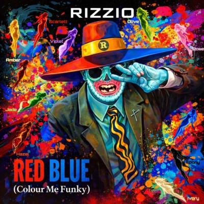

I serve more aces than Pete Sampras
I get more cheers than the Wimbledon masses
Brash i may be, cash and ladies
Cruisin in SILVER streets thru the heart of the city
Shitty is my life, GREY days, no wife
Strife and death follows me wherever i go
Where and when will it all end God only knows
And if he does I hope he'll let on to me
Sick and tired of workin nights in BROWN poverty
I want to get away from this underground system
So i can go up to the office and diss them
Tell em where to stick their job
And say "Fuck off" to my big fat boss
I’m a player now and you’d better believe it
Cos sooner or later you’re gonna read it
In all of da hip hop magazines
And on the back of that i’m makin nuff dope GREEN
No longer feelin BLUE
'Cos Project X is my crew
Gettin high above my head
Gettin high and gettin RED
Any sucker that tests may end up dead
And those YELLOW belly fuckers i’ll send 'em to bed
Believe i’m goin thru a PURPLE patch
Roadblocks can’t get me i’m hard to catch
Every shade made me painted by the life I knew
Colour me funky watch the colours tell truth
Hard to catch cos i’m a latchkey kid
I make love to girls with the biggest tits
I’m a player i’m a player i’m a brand new player
Like Too $hort I got women and bitches everywhere
Got their bright WHITE search lights in da sky
Searching for a BLACK in the dead of da night guy
Amber in the doorway, and then on the stairs
Scarlett on the mobile, sexting her peers
Violet in the twilight, bent over her pose
Olive branch offered, but nobody knows
Rose loves a big prick, and has a big booty
Ruby lips starring in B.J. The Movie!
Jade has big jugs, firm under pressure
Hazel eyes gesture to watch me undress her
Sapphire is no liar, temperature drops
A bitch very rich, make the whole room watch
Ebony riding, her body has poise
Ivory promised a gang bang of boys
Nothing has changed
Even the bang remains the same
Except for you and I
Please don't let the lies that blind
Change the way you see me
And it takes a lot of time 'G'
To go from town to town
And you know I can't settle down
Ahh, ahh, ahh, ahh
Rizzio's coming, coming for you
Rizzio's coming, coming for you (coming for you)
Rizzio's coming, coming for you (yes he is)
Rizzio's coming, coming for you (he's coming for you, and you)
Rizzio's coming, coming for you
Rizzio's coming, coming for you (coming for you)
Rizzio's coming, coming for you (yes he is)
Rizzio's coming, coming for you (he's coming for you, and you, and especially you)